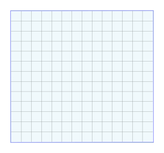
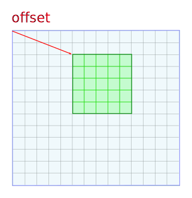
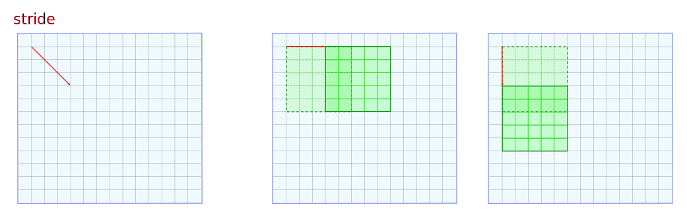
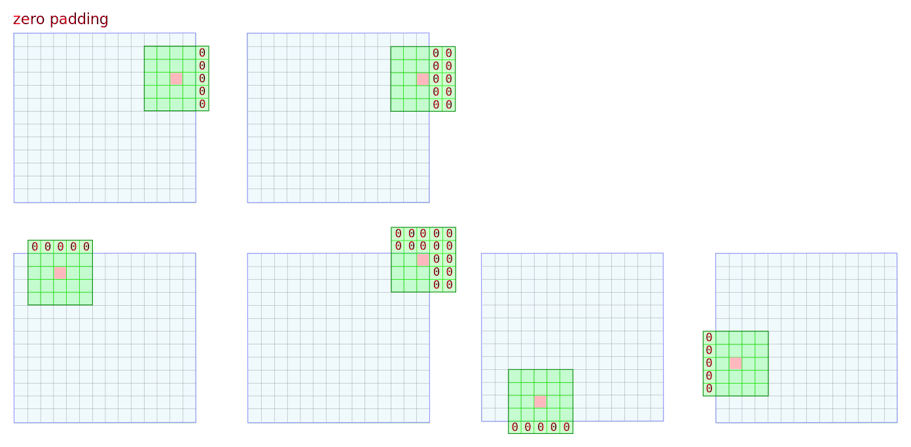
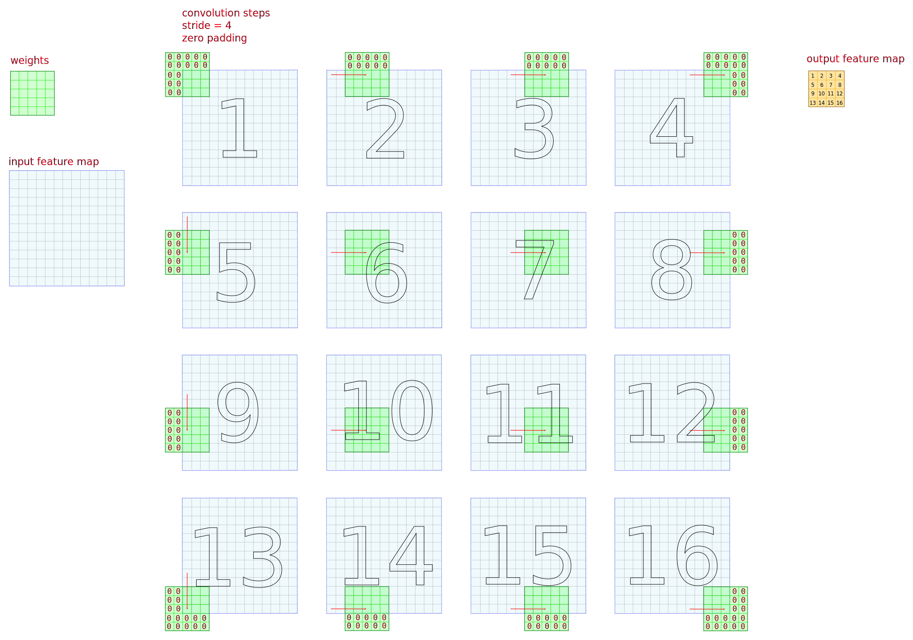

The buffer is memory decribed by vector of lenghts definig it in n-dimmentional space. In example (images below) space is 2-D.
 The size parameter is a vector which contains lenght of each dimension of memory space where calculations were performed or saved.
Usually it is used for defining output size and it must meet requirement: size ≤ buffer_size
Also it can be used to define pooling and/or convolution filter size.
The offset parameter is a vector defining shift relative to beginning of buffer.
The stride parameter defines shift in input buffer between adiacent calculations of output values.
Padding determines how to treat data accesses "outside" buffer. Can be explicit (there's memory "outside" buffer that contain values), or implicit (algorithm detects accesses to padding region, does not access memory and uses zeros instead).
In each step of convolution values of the mask are scalary multiplied by the values of input and then all of these multiplications are added together and placed in the output buffer.
